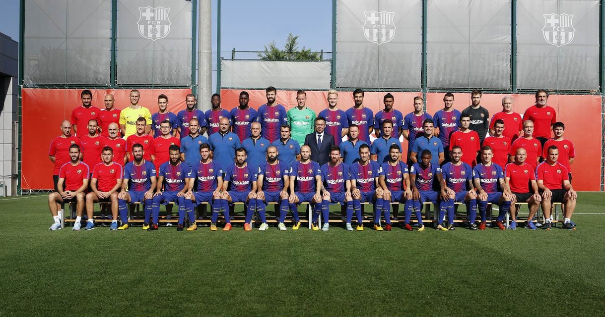

FC Barcelona
One Team, One Club
One Team, One Club

| POS | NO. | PLAYER | AGE |
|---|---|---|---|
| D | 18 | Jordi Alba | 28 |
| D | 2 | Nélson Semedo | 23 |
| D | 19 | Lucas Digne | 24 |
| D | 14 | Javier Mascherano | 33 |
| D | 3 | Gerard Piqué | 30 |
| D | 23 | Samuel Umtiti | 23 |
| D | 25 | Thomas Vermaelen | 31 |
| D | 22 | Aleix Vidal | 28 |
| M | 12 | Rafinha | 24 |
| M | 15 | Paulinho | 29 |
| M | 5 | Sergio Busquets | 29 |
| M | 21 | André Gomes | 24 |
| M | 8 | Andrés Iniesta | 33 |
| M | 4 | Ivan Rakitic | 29 |
| M | 20 | Sergi Roberto | 25 |
| M | 6 | Denis Suárez | 23 |
| M | 7 | Arda Turan | 30 |
| F | 17 | Paco Alcácer | 24 |
| F | 11 | Ousmane Dembélé | 20 |
| F | 16 | Gerard Deulofeu | 23 |
| F | 10 | Lionel Messi | 30 |
| F | 9 | Luis Suárez | 30 |
| G | 13 | Jasper Cillessen | 28 |
| G | 1 | Marc-André ter Stegen | 25 |